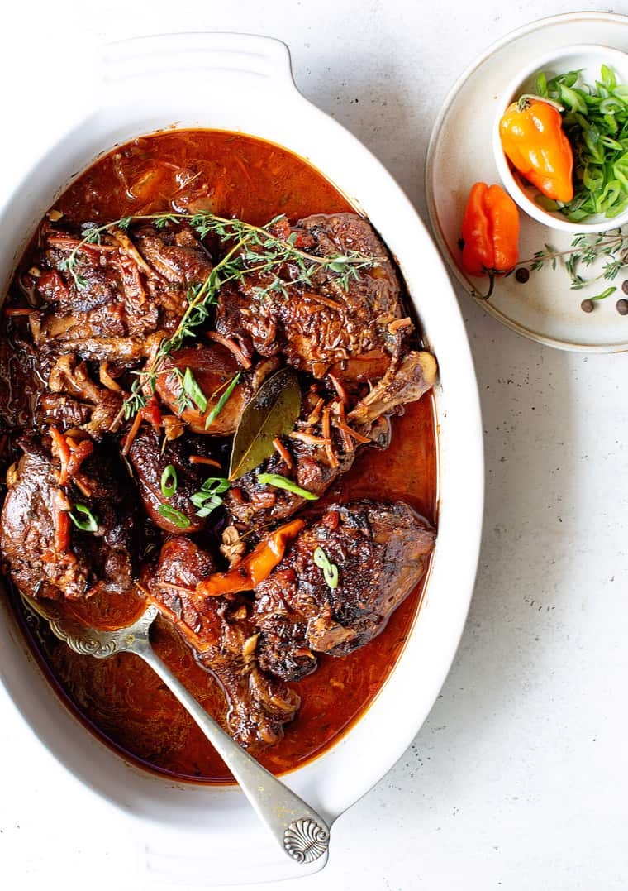

Jamaican brown stew chicken

Description
Jamaican Brown Stew Chicken is a delicious and flavorful dish with a perfect blend of spices
Ingredients
- 2.5 lbs (1.13 kg) chicken, cut into pieces
- 2 tbsp vegetable oil
- 2 tbsp brown sugar
- 1 onion, chopped
- 3 green onions, chopped
- 3 garlic cloves, minced
- 1 tsp fresh thyme, chopped
- 1 tsp allspice
- 1 tsp ginger, grated
- 1 tsp soy sauce
- 1 tsp Worcestershire sauce
- 2 cups chicken broth
- 2 carrots, sliced
- 2 potatoes, diced
- Salt and pepper to taste
Steps
- Season chicken with salt, pepper, and brown sugar.
- Brown chicken in vegetable oil until golden. Set aside.
- Saute onions, green onions, and garlic until softened.
- Stir in thyme, allspice, and ginger. Cook for 1-2 minutes.
- Pour soy sauce and Worcestershire sauce, deglaze the pot.
- Return chicken to coat with aromatics.
- Pour chicken broth, simmer covered for 30 minutes.
- Add carrots and potatoes, simmer until tender.
- Taste and adjust salt and pepper.
- Garnish with green onions or thyme. Serve with rice.
Back to home